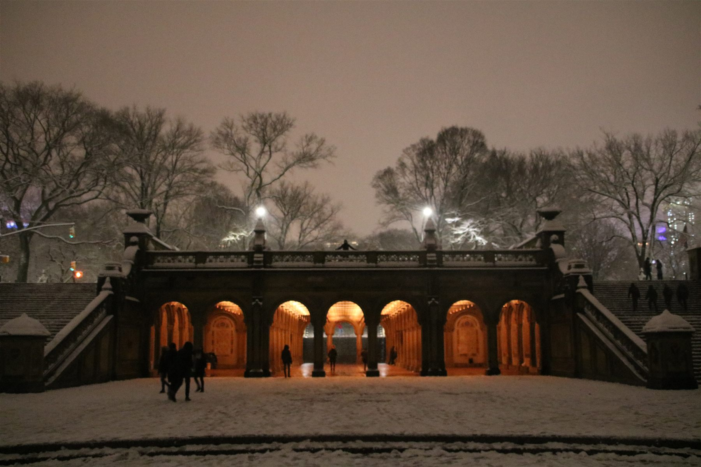

Alle Reisen
Alle Reisen
Alle Reisen
Alle Reisen

Nordamerika · Städtetrip
Sehenswürdigkeiten
Klick auf einen Eintrag zoomt auf die Karte.
Allgemeines
New York – die Stadt, von der man immer träumt. Als wir das erste Mal aus dem Flugzeug auf die Skyline Manhattans geblickt haben, war der Zauber sofort da. Sieben Tage haben wir die Stadt in vollen Zügen genossen – zu Fuß, mit der Subway, auf dem Fahrrad durch den Central Park.
Was uns überrascht hat: New York ist so viel mehr als nur Times Square und Freiheitsstatue. Die verschiedenen Viertel haben alle eine eigene Seele.
Stationen
Impressionen